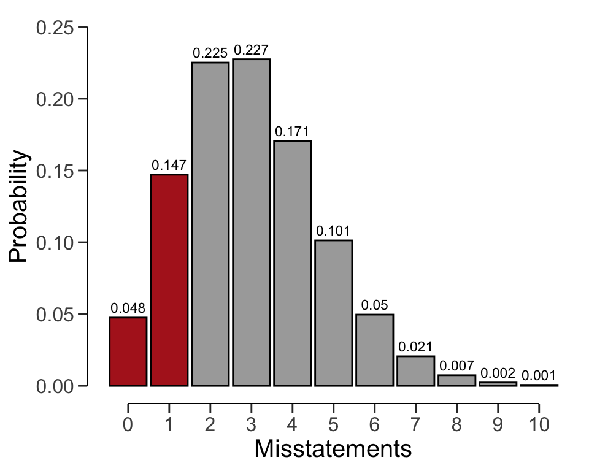
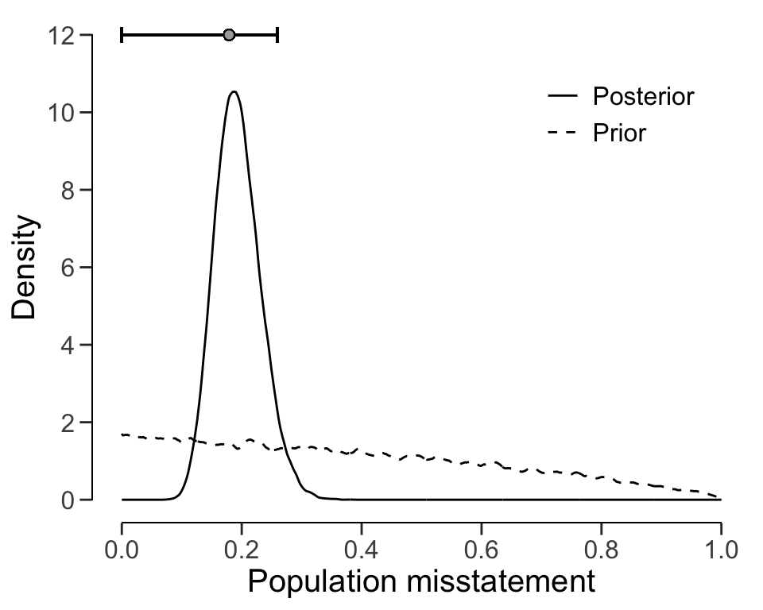

evaluation(x = 1, n = 100, method = "binomial")
#>
#> Classical Audit Sample Evaluation
#>
#> data: 1 and 100
#> number of errors = 1, number of samples = 100, taint = 1
#> 95 percent confidence interval:
#> 0.00000000 0.04655981
#> most likely estimate:
#> 0.01
#> results obtained via method 'binomial'6 Evaluation
In statistical audit sampling, the evaluation of the sample is the crucial last step in the process. Here, the auditor assesses the audit evidence collected from the sample and blends it with the evidence gathered in earlier stages of the audit. The outcome of this evaluation forms the auditor’s overall opinion of the population being audited.
Just as with planning a sample, evaluating a sample requires knowledge of the circumstances that determine whether the population should be accepted or rejected, which are referred to as sampling objectives. Sampling objectives can be divided into two main categories:
- Hypothesis testing: The goal of the sample is to obtain evidence for or against the claim that the misstatement in the population is lower than a given value (i.e., the performance materiality).
- Estimation: The goal of the sample is to obtain an accurate estimate of the misstatement in the population with a certain precision.

When an auditor needs to perform audit sampling, they typically have two options: non-stratified or stratified sampling. Non-stratified sampling involves selecting a sample of units without considering any categorical characteristics, such as product type or store location, of these items. Stratified sampling involves dividing the population into subgroups based on specific characteristics and selecting a sample from each subgroup. In comparison to non-stratified sampling, stratified sampling can improve efficiency. However, in this chapter, we will focus on non-stratified audit sampling, while stratified audit sampling will be covered in the next chapter.
Non-stratified sampling is typically used when the population is considered homogenous, meaning there are no significant differences between subgroups. This approach is also suitable when the auditor does not need to consider differences between subgroups. For example, when an auditor reviews a company’s inventory using non-stratified sampling, they may choose a random sample of items from the entire inventory without dividing it into subgroups. Similarly, when conducting an audit of a small business’s general ledger, an auditor may select a sample of entries without dividing them based on categorical features such as payment method.
To get started with non-stratified evaluation of audit samples, the auditor must first decide if they want to evaluate based on summary statistics derived from a sample (i.e., 1 misstatement in 100 items) or if they want to calculate the misstatements from a data set. To make the principle of evaluation easier to understand, we will first explain how to evaluate a sample using summary statistics from a sample. Next, we will explain how to evaluate a sample using the raw data.
6.1 Binary Misstatements
Complete misstatements arise when there is an absolute discrepancy between the actual value of an item in the sample and its recorded value. From a data perspective, this signifies that the misstatements in the sample are strictly binary (i.e., 0 or 1) and do not encompass values within the intermediary range of 0 to 1. For example, a receipt for goods received can be fully misstated if the goods have not been received at all.
6.1.1 Classical Evaluation
In classical evaluation, confidence intervals and p-values are used to measure the uncertainty and the evidence against the hypothesis of intolerable misstatement, respectively.
Confidence intervals play a crucial role in classical inference by helping to determine the uncertainty in a sample estimate. For example, if an auditor needs to estimate the misstatement in a tax return, they can calculate a confidence interval for the misstatement using classical inference. This confidence interval represents a range of possible values in which the true misstatement of the population is likely to fall. This range helps auditors make informed decisions about the misstatement and determine the potential impact of the misstatement on the (loss of) taxes.
To illustrate, suppose an auditor wants to estimate the misstatement in a population based on a sample of 100 items containing one misstatement. Using the evaluation() function in jfa and specifying x = 1 and n = 100, the output shows that the estimated most likely misstatement in the population is one percent, and the 95 percent (one-sided) confidence interval ranges from 0 percent to 4.74 percent. It is important to note that the correct interpretation of a 95 percent confidence interval is: “If we were to repeat the experiment over and over, then 95 percent of the time the confidence interval contains the true misstatement rate” (Hoekstra et al., 2014).
Classical hypothesis testing relies on the p-value to determine whether to accept or reject a certain hypothesis about a population. For example, suppose an auditor wishes to test whether the population contains misstatements of less than three percent (they formulate the performance materiality based on existing rules and regulations). They would create the hypotheses \(H_1\): \(\theta\) < 0.03 and \(H_0\): \(\theta \geq\) 0.03. The significance level is set to 0.05, equivalent to an audit risk of 5 percent. This means that a p-value below 0.05 is sufficient to reject the hypothesis of intolerable misstatement \(H_0\).
In jfa, a classical hypothesis test using the p-value can be conducted by specifying the materiality argument in the evaluation() function. For example, to indicate a performance materiality of three percent, the auditor can specify materiality = 0.03. Along with the confidence interval, the output displays a p-value of 0.19462, which is greater than 0.05. Therefore, the hypothesis \(H_0\) cannot be rejected at a significance level of five percent. As a result, the auditor cannot conclude that the sample provides sufficient evidence to reduce the audit risk to an appropriate level and cannot state that the population does not have misstatements of three percent or more.
eval <- evaluation(materiality = 0.03, x = 1, n = 100, method = "binomial")
eval
#>
#> Classical Audit Sample Evaluation
#>
#> data: 1 and 100
#> number of errors = 1, number of samples = 100, taint = 1, p-value =
#> 0.19462
#> alternative hypothesis: true misstatement rate is less than 0.03
#> 95 percent confidence interval:
#> 0.00000000 0.04655981
#> most likely estimate:
#> 0.01
#> results obtained via method 'binomial'The exact definition of the p-value is “the probability of observing the data, or more extreme data, given the truth of the hypothesis of intolerable misstatement”. The p-value of 0.19462 can be visualized via the plot() function, see Figure 6.2.
plot(eval, type = "posterior")

6.1.2 Bayesian Evaluation
In addition to classical evaluation methods, Bayesian inference offers an alternative approach to assessing audit samples. Unlike classical methods that use confidence intervals, Bayesian methods use credible intervals to measure the uncertainty in estimates.
Bayesian inference begins by specifying a prior distribution, which reflects prior knowledge about the misstatement in the population before any data is collected. This prior distribution is then combined with the information obtained from the sample to derive a posterior distribution. From the posterior distribution, credible intervals can be calculated to estimate the most likely misstatement in the population and the range of values within which the true value is likely to fall.
A Bayesian credible interval is intuitively interpreted as follows: There is a 95 percent probability that the misstatement falls within the credible interval. This is in contrast to the interpretation of a classical confidence interval, which is often misinterpreted for its Bayesian counterpart.
For instance, consider a scenario where a uniform beta(1, 1) prior distribution is used, along with a sample of 100 units, one of which contains a misstatement. Using the posterior distribution, it can be estimated that the most likely misstatement in the population is 1 percent. Furthermore, a Bayesian credible interval can be calculated to show that there is a 95 percent probability that the true misstatement rate lies between 0 percent and 4.61 percent. The small difference between the classical and default Bayesian results arises from the use of the uniform beta(1, 1) prior distribution. To achieve classical results, we can create a prior with method = "strict" using the auditPrior() function. Remember that any call to evaluation() can be done in a Bayesian way by specifying a prior distribution. Therefore, the sole difference between the call for a classical analysis and the call for a Bayesian analysis is the use of the prior constructed through a call to auditPrior().
prior <- auditPrior(method = "default", likelihood = "binomial")
eval <- evaluation(x = 1, n = 100, prior = prior)
eval
#>
#> Bayesian Audit Sample Evaluation
#>
#> data: 1 and 100
#> number of errors = 1, number of samples = 100, taint = 1
#> 95 percent credible interval:
#> 0.00000000 0.04610735
#> most likely estimate:
#> 0.01
#> results obtained via method 'binomial' + 'prior'You can use the plot() function to visualize the posterior distribution along the most likely misstatement and the credible interval for the population misstatement. Figure 6.3 shows this posterior distribution.
plot(eval, type = "posterior")Bayesian hypothesis testing also involves the use of evidence measures, but instead of p-values, Bayesian inference employs the Bayes factor, either \(BF_{10}\) or \(BF_{01}\), to arrive at conclusions regarding the evidence furnished by the sample in favor of one of two hypotheses, \(H_1\) or \(H_0\). The Bayes factor quantifies the strength of evidence in favor of one hypothesis over another.
The Bayes factor provides an intuitive measure of statistical evidence, allowing auditors to interpret the probability of the data occurring under either hypothesis. For instance, if the evaluation() function outputs a value of 10 for \(BF_{10}\), it means that the data are ten times more likely to have arisen under \(H_1\) than under \(H_0\). A Bayes factor \(BF_{10}\) greater than 1 suggests evidence for \(H_1\) and against \(H_0\), while a Bayes factor \(BF_{10}\) less than 1 suggests evidence for \(H_0\) and against \(H_1\). Although the evaluation() function returns \(BF_{10}\) by default, one can compute \(BF_{01}\) as the inverse of \(BF_{10}\) (i.e., \(BF_{01}\) = \(\frac{1}{BF_{10}}\)).
To illustrate, suppose an auditor wishes to verify whether a population contains less than three percent misstatement. Like before, this corresponds to the hypotheses \(H_1\): \(\theta\) < 0.03 and \(H_0\): \(\theta \geq\) 0.03. The auditor has taken a sample of \(n\) = 100 items, with only \(k\) = 1 item containing a misstatement. By assuming a default beta(1, 1) prior distribution, the following code evaluates the sample using a Bayesian hypothesis test and the Bayes factor. The materiality = 0.03 argument specifies the materiality for this population.
evaluation(materiality = 0.03, x = 1, n = 100, prior = prior)
#>
#> Bayesian Audit Sample Evaluation
#>
#> data: 1 and 100
#> number of errors = 1, number of samples = 100, taint = 1, BF₁₀ =
#> 137.65
#> alternative hypothesis: true misstatement rate is less than 0.03
#> 95 percent credible interval:
#> 0.00000000 0.04610735
#> most likely estimate:
#> 0.01
#> results obtained via method 'binomial' + 'prior'In this case, the Bayes factor is \(BF_{10}\) = 137.65, which means that the sample data is 137.65 times more likely to occur under the hypothesis of tolerable misstatement than the hypothesis of material misstatement. We arrived at this value by considering both the prior distribution and the posterior distribution. Specifically, we first used the beta(1, 1) prior distribution to calculate the prior probability of the hypothesis of tolerable misstatement.
prior.prob.h1 <- pbeta(0.03, shape1 = 1, shape2 = 1)
prior.prob.h1
#> [1] 0.03The probability of the hypothesis of intolerable misstatement is essentially the opposite of the probability of the hypothesis of tolerable misstatement. To clarify, it is just one minus the prior probability of the hypothesis of tolerable misstatement.
prior.prob.h0 <- 1 - prior.prob.h1
prior.prob.h0
#> [1] 0.97We use the prior probabilities to calculate the prior odds, which is the ratio of the prior probabilities.
prior.odds.h1 <- prior.prob.h1 / prior.prob.h0
prior.odds.h1
#> [1] 0.03092784To compute the posterior probability of the hypothesis of tolerable misstatement, we can use the posterior distribution and essentially follow the same steps. Hence, we calculate the posterior probability for the hypothesis of tolerable misstatement, then obtain the posterior probability of the hypothesis of intolerable misstatement by subtracting this probability from one. Finally, the posterior odds are calculated as the ratio of the posterior probabilities
post.prob.h1 <- pbeta(0.03, shape1 = 1 + 1, shape2 = 1 + 100 - 1)
post.prob.h0 <- 1 - post.prob.h1
post.odds.h1 <- post.prob.h1 / post.prob.h0
post.odds.h1
#> [1] 4.257346Finally, the Bayes factor can be computed as the ratio of the posterior odds and the prior odds.
bf10 <- post.odds.h1 / prior.odds.h1
bf10
#> [1] 137.6542It is worth noting that this Bayes factor of 137.65 is remarkably high, considering the data that has been observed. However, this high value is not unexpected since the Bayes factor depends on the prior distribution for \(\theta\). Typically, when the prior distribution expresses a very conservative opinion on the population misstatement, as is the case with the beta(1, 1) prior, the Bayes factor tends to overestimate the evidence in favor of the hypothesis of tolerable misstatement. To mitigate this, you can use a prior distribution that is impartial towards the hypotheses by using method = "impartial" in the auditPrior() function (Derks et al., 2022).
prior <- auditPrior(materiality = 0.03, method = "impartial", likelihood = "binomial")
evaluation(materiality = 0.03, x = 1, n = 100, prior = prior)
#>
#> Bayesian Audit Sample Evaluation
#>
#> data: 1 and 100
#> number of errors = 1, number of samples = 100, taint = 1, BF₁₀ =
#> 7.7685
#> alternative hypothesis: true misstatement rate is less than 0.03
#> 95 percent credible interval:
#> 0.00000000 0.03806016
#> most likely estimate:
#> 0.0082131
#> results obtained via method 'binomial' + 'prior'The analysis above was conducted using an impartial prior. The resulting output indicates that \(BF_{10}\) = 7.77, which moderately supports \(H_1\). This outcome suggests that the population contains misstatements lower than five percent (tolerable misstatement), assuming impartiality. Both prior distributions resulted in persuasive Bayes factors, making the results reliable regardless of the prior distribution selected. As a result, the auditor can confidently assert that the sample data provides evidence that the population does not contain a material misstatement.
6.1.3 Using Data
Previously, we relied on summary statistics obtained from a sample to carry out evaluations. However, it is also possible to supply the evaluation() function with a data set. Doing so allows the function to calculate misstatements based on the booked and audited values of individual items.
To demonstrate how this works, we will use the allowances data set that comes with the jfa package. This data set includes \(N\) = 4076 financial statement line items, each with a booked value (bookValue) and an audited (true) value (auditValue) for illustrative purposes. The total value of the population is $16,772,249. Since this example focuses on the evaluation stage of an audit, the sample is already identified within the data set. For this example, the performance materiality has been set at five percent, or $838,612.5.
When evaluating an audit sample using a data set, it is necessary to specify the data, values, and values.audit arguments in the evaluation() function. The input for these arguments should be the name of the relevant column in data. For example, the call below evaluates the allowances sample using a classical evaluation procedure. In this case, the output shows that the estimate of the misstatement in the population is 15.77 percent, with the 95 percent (one-sided) confidence interval ranging from 0 percent to 17.5 percent.
x <- evaluation(
materiality = 0.05, data = allowances, times = "times",
values = "bookValue", values.audit = "auditValue"
)
summary(x)
#>
#> Classical Audit Sample Evaluation Summary
#>
#> Options:
#> Confidence level: 0.95
#> Materiality: 0.05
#> Hypotheses: H₀: Θ >= 0.05 vs. H₁: Θ < 0.05
#> Method: poisson
#>
#> Data:
#> Sample size: 1604
#> Number of errors: 401
#> Sum of taints: 252.9281046
#>
#> Results:
#> Most likely error: 0.15769
#> 95 percent confidence interval: [0, 0.175]
#> Precision: 0.017311
#> p-value: 16.2 Partial Misstatements
Partial misstatements occur when there is only a partial discrepancy between the true value of an item in the sample and its recorded value. From a data perspective, this implies that the misstatements in the sample are not just binary (i.e., 0 or 1) but also often lie between 0 and 1. For instance, a receipt for goods received can be partially misstated if only part of the goods have been received. In practice, this means that the usual methods for evaluating binary misstatements do not suffice.
To illustrate how auditors can adequately deal with this type of misstatements, we examine a realistic sample from a financial audit using the allowances data set included in the jfa package. For clarity, we perform some data pre-processing to arrive at the population for our example. In this case, the performance materiality (i.e., the maximum tolerable misstatement) for the population is set to \(\theta_{max}\) = 0.1, or ten percent.
population <- allowances[, c(1, 3, 4)]
population <- population[population[["bookValue"]] > 0, ]
population <- population[!is.na(population[["auditValue"]]), ]
head(population)
#> item bookValue auditValue
#> 1 1 1600 1600
#> 4 4 1250 1250
#> 7 7 1150 1150
#> 10 10 1250 1250
#> 12 12 6700 6700
#> 13 13 1450 1450To decide whether the misstatement in the population is lower than the performance materiality of ten percent, a sample of \(n\) = 60 monetary units distributed across the same number of items is selected from the population of \(N\) = 1177 items. In this case, the sample is selected using a fixed interval sampling method in which the items in the population are randomized before selection.
set.seed(21)
sample <- selection(
population, size = 60, randomize = TRUE,
method = "interval", units = "values", values = "bookValue"
)$sampleAfter inspecting the items in the sample, each item is annotated with its recorded (i.e., book) value and its true (i.e., audit) value. When evaluating partial misstatements, auditors often calculate the ‘taint’ \(t_i\) of each item \(i\), which is defined as the proportional misstatement in the item:
\[\begin{equation} t_i = \frac{\text{Book value}_i - \text{Audit value}_i}{\text{Book value}_i}. \end{equation}\]
For instance, if item \(i\) is booked for $1,000 but has an audit value of $500 it has a taint of \(t_i\) = 0.5. On the other hand, if the item does not contain any misstatement, it has a taint of \(t_i\) = 0. Lastly, if the item is fully misstated (i.e., it has a book value of $0), its taint is \(t_i\) = 1.
As is often the case in practice, this audit sample contains many items that are correct (34), some items that are fully misstated (4), and some items that are partially misstated (22). The table below shows the distribution of these misstatements.
Typically, techniques for evaluating audit samples overlook the prevalence of many zeros in the data. Yet, considering the abundance of zeros while modeling the misstatement in the population can enhance the auditor’s efficiency. In the following sections, we demonstrate several approaches that can be used to deal with partial misstatements and show how they improve the auditor’s efficiency.
6.2.1 Classical Evaluation
Classical (i.e., frequentist) methods solely look to the data for estimating the parameters in a statistical model via maximum likelihood estimation. This methodology is widely adopted in auditing, and therefore we will discuss it first in this vignette.
6.2.1.1 Binomial Likelihood
The easiest way to analyze partial misstatements is to aggregate them and simply extrapolate the sum of proportional misstatements (i.e., the total taint) to the population. Under the hood, this approach employs a binomial likelihood to estimate the misstatement: \(k\) \(\sim\) Binomial(\(n\), \(\theta\)). In this model, \(\theta\) represents the misstatement in the population. This method uses the sum of the taints, denoted as \(k\) = \(\sum_{i=0}^n t_i\) as the number of misstatements, together with the sample size \(n\).
While aggregating the taints in this manner may not adhere to a strictly ‘clean’ modeling approach, as the binomial likelihood is only defined for binary data representing complete misstatements, it proves to be effective in estimating the misstatement (Broeze, 2006, Chapter 4.3). Despite its somewhat unconventional nature, the analytical feasibility of this approach makes it easy to use and therefore it is commonly applied in practice.
For the classical binomial likelihood, aggregating the taints can be done using method = "binomial" in the evaluation() function. Using maximum likelihood estimation, \(\theta\) = \(\frac{\sum t}{n}\) = \(\frac{11.003}{60}\) = 0.18338.
evaluation(
method = "binomial", data = sample, materiality = 0.1,
values = "bookValue", values.audit = "auditValue"
)
#>
#> Classical Audit Sample Evaluation
#>
#> data: sample
#> number of errors = 26, number of samples = 60, taint = 11.003,
#> p-value = 0.98545
#> alternative hypothesis: true misstatement rate is less than 0.1
#> 95 percent confidence interval:
#> 0.0000000 0.2852153
#> most likely estimate:
#> 0.18338
#> results obtained via method 'binomial'As shown in the output, the most likely misstatement is estimated to be 18.34 percent, with a 95 percent upper bound of 28.52 percent. Note that this approach might be effective (i.e., estimate the misstatement well) but not not very efficient (i.e., has a relatively high upper bound). That is because it does not take into account the information in the distribution of the taints.
6.2.1.2 Stringer Bound
The Stringer bound is a commonly used method to evaluate audit samples. It is attractive because it takes into account the magnitude of the taints, thereby resulting in a smaller confidence interval (i.e., a lower upper bound). Note that, because it takes into account the magnitude of the taints (Bickel, 1992; Stringer, 1963), the Stringer bound only works if the actual data are present to calculate the taints.
Here we describe te calculation of the typical Stringer bound using the binomial distribution. The quantity \(p(0; 1 - \alpha)\) is the Clopper-Pearson one-sided upper confidence bound for a binomial parameter with 0 successes in \(n\) trials which, for zero errors, can be calculated as 1 \(- \alpha^{\frac{1}{n}}\). The more general \(p(j; 1 - \alpha)\) is the Clopper-Pearson one-sided upper confidence bound for binomial parameter with \(j\) successes in \(n\) trials (Clopper & Pearson, 1934). In other words, it is the proportion corresponding to a binomial distribution with \(\alpha\) percent chance that \(j\) or less errors are observed in \(n\) observations. That means that \(p(j; 1 - \alpha)\) is the unique solution of:
\[\begin{equation} \sum^n_{k = j + 1} {n \choose k} p^k (1-p)^{n-k} = 1 - \alpha. \end{equation}\]
The outcome of this equation is equal to the 1 \(- \alpha\) percentile of a beta(1 + \(i\), \(n - i\)) distribution (Pearson, 1948). The Stringer bound is calculated using the Clopper-Pearson bounds, the number of overstatements \(m_+\) and the overstatement taints \(z_+\). When calculating the bound, the taints are placed in descending order in the formula as a form of conservatism.
\[\begin{equation} p(0; 1 - \alpha) + \sum_{j=1}^{m_+} \left[ p(j; 1 - \alpha) - p(j-1; 1 - \alpha) \right] \cdot z_{+_j} \end{equation}\]
In jfa, the Stringer bound can be applied using method = "stringer" in the evaluation() function. Note that the Stringer bound can also be calculated using the Poisson or hypergeometric distributions. The jfa package supports the Stringer bound in the evaluation() function using method = "stringer.poisson", stringer.binomial or stringer.hypergeometric, depending on the preferred distribution. The maximum likelihood estimate for the Stringer bound is the same as that of the binomial likelihood.
evaluation(
method = "stringer", data = sample, materiality = 0.1,
values = "bookValue", values.audit = "auditValue"
)
#>
#> Classical Audit Sample Evaluation
#>
#> data: sample
#> number of errors = 26, number of samples = 60, taint = 11.003
#> 95 percent confidence interval:
#> 0.0000000 0.2799705
#> most likely estimate:
#> 0.18338
#> results obtained via method 'stringer.binomial'As shown in the output, the most likely misstatement is estimated to be 18.34 percent, with a 95 percent upper bound of 27.99 percent. Since the upper bound of the Stringer method is (slightly) lower than that of the binomial likelihood, the Stringer bound is more efficient.
6.2.1.3 Hurdle Beta Model
Efficiency can be further improved by explicitly modeling the probability of a taint being zero (i.e., zero-inflation). This is a more realistic method because, in practice, most taints are zero. More formally, if there are explicit zeros present in the data, a model that incorporates a separate probability of being zero should be unequivocally favored over a model that does not. That is because the probability mass associated with the zeros in the adjusted model are infinitely larger than their probability densities under the traditional model.
In jfa, there are two types of models that incorporate a probability of the taint being zero. These are the zero-inflated Poisson model and the hurdle beta model. In the zero-inflated Poisson model, the idea is to incorporate extrazeros into the zeros already present in the Poisson distribution. However, this idea does not directly apply to a “zero-inflated beta” model. Since the beta likelihood cannot accommodate zeros, there are no zeros to inflate. A more appropriate name for this model is therefore a hurdle (i.e., two-component) beta model. This terminology reflects the idea that the model has to overcome the hurdle of zero values which are not inherently part of the beta likelihood.
The formal specification of the hurdle beta model is given below. Here, \(p_{(0, 1]}\) is the probability of a misstatement occurring, regardless of its size. Additionally, \(p_{1 | (0, 1]}\) is the conditional probability of a misstatement being a full misstatement. Furthermore, \(\phi\) is the average (non-zero-one) taint and \(\nu\) is the concentration of these taints. The total misstatement in the population is \(\theta\) = \(p_{(0, 1)} \cdot \phi\) + \(p_{1}\).
\[\begin{align*} t = \begin{cases} 0 & \text{with probability } p_{0} = 1 - p_{(0, 1]} \\ \left(0, 1\right] & \begin{cases} \text{Beta}(\phi \nu, (1 - \phi) \nu) & \text{with probability } p_{(0, 1)} = p_{(0, 1]} \cdot (1 - p_{1 | (0, 1]}) \\ 1 & \text{with probability } p_{1} = p_{(0, 1]} \cdot p_{1 | (0, 1]} \end{cases} \end{cases} \end{align*}\]
In jfa, this hurdle beta model can be fitted using method = "hurdle.beta" in the evaluation() function. To estimate the parameters in this model using the maximum likelihood, we use the default option prior = FALSE. Using maximum likelihood estimation, \(p_{(0, 1]}\) = \(\frac{n_t}{n}\) = \(\frac{26}{60}\) = 0.433, where \(n_t\) is the number of misstatements, and \(p_{1 | (0, 1]}\) = \(\frac{n_1}{n_t}\) = \(\frac{4}{26}\) = 0.1539, where \(n_1\) is the number of full misstatements. Furthermore, \(\phi\) = \(\frac{\sum t - n_1}{n_t - n_1}\) = \(\frac{11.003 - 4}{26 - 4}\) = 0.3183. Hence, the most likely misstatement is estimated to be \(\theta\) = (\(p_{(0, 1]}\) \(\cdot\) (\(1-p_{1 | (0, 1]}\)) \(\cdot\) \(\phi\)) + (\(p_{(0, 1]}\) \(\cdot\) \(p_{1 | (0, 1]}\)) = (0.433 \(\cdot\) (1 \(-\) 0.1539) \(\cdot\) 0.3183) + (0.433 \(\cdot\) 0.1539) = 0.18338. The upper bound cannot be derived analytically and has to be determined by drawing samples from the fitted model. Hence, it is recommended to call set.seed() before executing the following command to make the results reproducible.
set.seed(1)
evaluation(
method = "hurdle.beta", data = sample, materiality = 0.1,
values = "bookValue", values.audit = "auditValue"
)
#>
#> Classical Audit Sample Evaluation
#>
#> data: sample
#> number of errors = 26, number of samples = 60, taint = 11.003
#> alternative hypothesis: true misstatement rate is less than 0.1
#> 95 percent confidence interval:
#> 0.0000000 0.2577749
#> most likely estimate:
#> 0.18338
#> results obtained via method 'hurdle.beta'As shown in the output, the most likely misstatement is estimated to be 18.34 percent, with a 95 percent upper bound of around 26.28 percent. Since the upper bound of the hurdle beta model is (slightly) lower than that of the Stringer bound, the hurdle beta model is more efficient.
We leave it to the interested reader to apply the zero-inflated Poisson model to the data from this sample using method = "inflated.poisson". Please note that this requires specification of the number of items in the population (N.items) and the number of monetary units in the population (N.units).
6.2.2 Bayesian Evaluation
In the Bayesian framework, the auditor defines a prior distribution for the parameters in the model. This approach offers a notable advantage for models dealing with partial misstatement, as the prior distribution has a regularizing effect, reducing the amount of data required for reliable inferences. More specifically, frequentist models cannot be optimized when there are no non-zero taints in the sample. Additionally, the prior distribution enables auditors to integrate pre-existing information about the misstatement into the statistical analysis, thereby increasing efficiency when the auditor has pre-existing information about the misstatement.
6.2.2.1 Beta Distribution
The prior distribution we typically assign in the binomial model is the beta distribution. Just as we handle taints in the binomial likelihood, they can also be aggregated given the prior distribution. The statistical model is \(k\) \(\sim\) Binomial(\(n\), \(\theta\)) and the prior distribution that is used is \(\theta\) \(\sim\) Beta(\(\alpha\), \(\beta\)). Given the data \(n\) and \(k\) = \(\sum t\), the posterior distribution for the default beta(1, 1) prior distribution (prior = TRUE) can be derived analytically and is \(\theta\) \(\sim\) Beta(\(\alpha\) = 1 + \(\sum t\), \(\beta\) = 1 + \(n - \sum t\)).
For the binomial likelihood, this Bayesian model can be applied in the evaluation() function using method = "binomial" in comination with prior = TRUE. However, the input for the prior argument can also be an object created by the auditPrior() function.
eval_bayes <- evaluation(
method = "binomial", data = sample, materiality = 0.1,
values = "bookValue", values.audit = "auditValue", prior = TRUE
)
eval_bayes
#>
#> Bayesian Audit Sample Evaluation
#>
#> data: sample
#> number of errors = 26, number of samples = 60, taint = 11.003, BF₁₀
#> = 0.15107
#> alternative hypothesis: true misstatement rate is less than 0.1
#> 95 percent credible interval:
#> 0.0000000 0.2808365
#> most likely estimate:
#> 0.18338
#> results obtained via method 'binomial' + 'prior'As shown in the output, the most likely misstatement is estimated to be 18.34 percent, with a 95 percent upper bound of 28.1 percent. The prior and posterior distribution can be visualized via the plot(..., type = "posterior") command in Figure 6.4.
plot(eval_bayes, type = "posterior")6.2.2.2 Hurdle Beta Model
It is also possible to fit a Bayesian variant of the hurdle beta model. This entails applying prior distributions for the parameters \(p\), \(\phi\), and \(\nu\). The prior distributions used by jfa for the Bayesian hurdle beta model are \(p_{(0, 1]}\) \(\sim\) Beta(\(\alpha\), \(\beta\)) (to be specified by the user), \(p_{1 | (0, 1]}\) \(\sim\) Beta(1, 1), \(\phi\) \(\sim\) Beta(1, 1), and \(\nu\) \(\sim\) Normal(0, 100).
This Bayesian hurdle beta model can be applied using method = "hurdle.beta" in combination with prior = TRUE (or an object created by the auditPrior() function) in the evaluation() function. In this case, the posterior distribution cannot be determined analytically and must be determined using MCMC sampling, which is why it is recommended to call set.seed() before computing the results.
set.seed(2)
eval_hurdle_bayes <- evaluation(
method = "hurdle.beta", data = sample, materiality = 0.1,
values = "bookValue", values.audit = "auditValue", prior = TRUE
)
eval_hurdle_bayes
#>
#> Bayesian Audit Sample Evaluation
#>
#> data: sample
#> number of errors = 26, number of samples = 60, taint = 11.003, BF₁₀
#> = 0.007913
#> alternative hypothesis: true misstatement rate is less than 0.1
#> 95 percent credible interval:
#> 0.000000 0.259837
#> most likely estimate:
#> 0.179
#> results obtained via method 'hurdle.beta' + 'prior'As shown in the output, the most likely misstatement is estimated to be 17.73 percent, with a 95 percent upper bound of around 26.51 percent. The prior and posterior distribution can be visualized using the plot() function in Figure 6.5.
plot(eval_hurdle_bayes, type = "posterior")

6.3 Practical Exercises
- Evaluate a sample of \(n\) = 30 items containing \(k\) = 2 misstatements. Use the classical approach.
Click to reveal answer
The evaluation can be performed using the evaluation() function with the default arguments.
evaluation(n = 30, x = 2, method = "binomial")
#>
#> Classical Audit Sample Evaluation
#>
#> data: 2 and 30
#> number of errors = 2, number of samples = 30, taint = 2
#> 95 percent confidence interval:
#> 0.000000 0.195326
#> most likely estimate:
#> 0.066667
#> results obtained via method 'binomial'